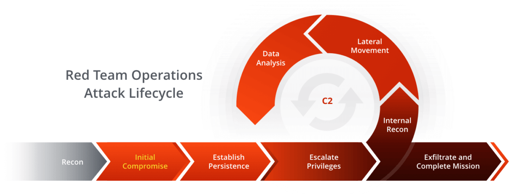

Table of Content:
The Cyber Kill Chain Explained
The Cyber Kill Chain, introduced by Lockheed Martin, models an intrusion as a sequence of stages. An attacker must complete each stage to succeed — which means a defender only has to break one link to stop the whole attack. That framing is why it's still useful today.
What is the Kill Chain
Think of it as the attacker's project plan. Every targeted breach, from commodity ransomware to APT campaigns, roughly follows it. Mapping your detections to each stage tells you where you're blind.
The 7 phases
- Reconnaissance — gathering OSINT, emails, tech stack.
- Weaponization — pairing an exploit with a payload.
- Delivery — phishing, USB, drive-by, exposed service.
- Exploitation — triggering the vulnerability.
- Installation — dropping a backdoor for persistence.
- Command & Control (C2) — remote channel to the host.
- Actions on Objectives — exfiltration, encryption, sabotage.
Lateral movement
Real environments are rarely owned from a single host. After Installation and C2, the attacker pivots — reusing credentials, abusing trust relationships, and chaining hosts toward the crown jewels. This is the lateral movement phase, and it's where most dwell time is spent.

Common lateral-movement techniques (MITRE ATT&CK references):
T1021— Remote Services (RDP, SMB, WinRM, SSH)T1550— Use of Alternate Authentication Material (Pass-the-Hash/Ticket)T1570— Lateral Tool Transfer
Defending against it
Break one link and the chain fails. You don't need perfect coverage — you need coverage the attacker can't predict.
- Recon/Delivery: email filtering, attack-surface reduction.
- Exploitation: patching, EDR, application allowlisting.
- Lateral movement: network segmentation, LAPS, tiered admin.
- C2/Exfil: egress filtering, DNS monitoring, anomaly detection.
Next up I'll walk through detecting Pass-the-Hash in a lab AD environment.